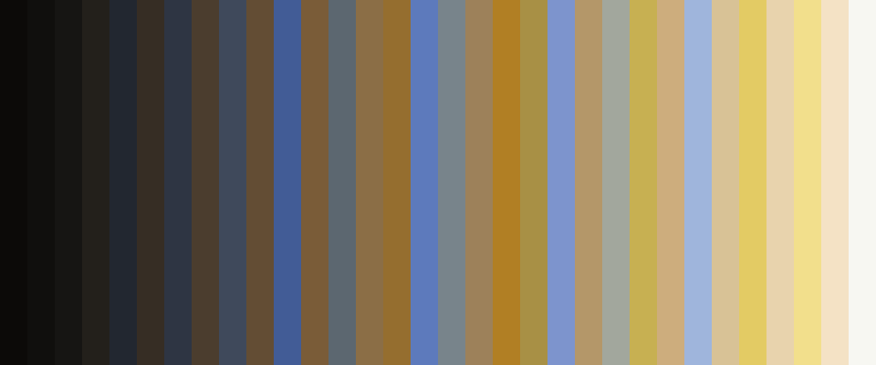

Saving colorschemes
Saving colorschemes as images
Sometimes you want to save a colorscheme, which is usually just a pixel thick, as a swatch or image. You can do this with colorscheme_to_image(). The second argument is the number of rows. The third argument is the number of times each pixel is repeated in the row. The function returns an image which you can save using FileIO's save():
using FileIO, ColorSchemeTools, Images, Colors
# 20 pixels for each color, 150 rows
img = colorscheme_to_image(ColorSchemes.vermeer, 150, 20)
save("/tmp/cs_vermeer-150-20.png", img)
The image_to_swatch() function (a shortcut) extracts a n-color scheme from a supplied image and saves it as a swatch in a PNG.
image_to_swatch("/tmp/input.png", 10, "/tmp/output.png")Saving colorschemes to text files
You can save a ColorScheme as a (Julia) text file with the imaginatively-titled colorscheme_to_text() function.
Remember to make the name a Julia-friendly one, because it may eventually become a symbol and a dictionary key if the Julia file is include-d.
colorscheme_to_text(ColorSchemes.vermeer,
"the_lost_vermeer", # name
"/tmp/the_lost_vermeer.jl", # filename
category="dutch painters", # category
notes="it's not really lost" # notes
)Of course, if you just want the color definitions, you can simply type:
map(println, ColorSchemes.vermeer.colors);